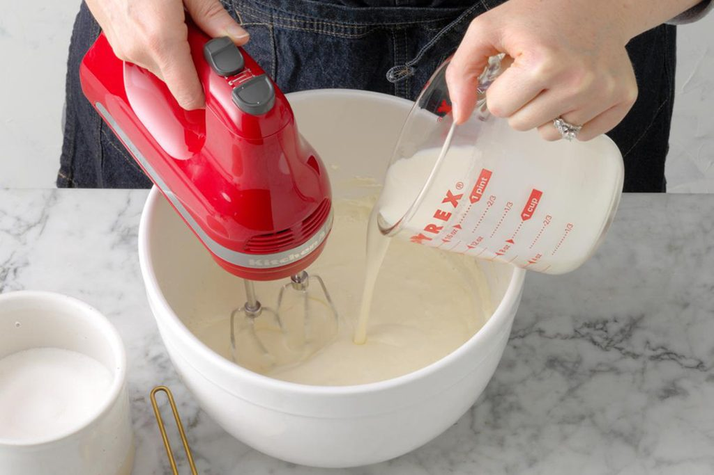
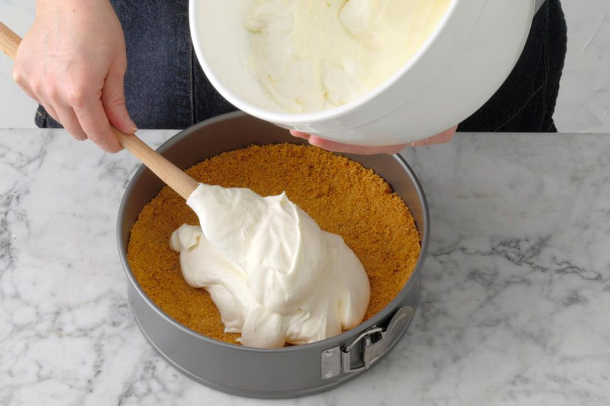
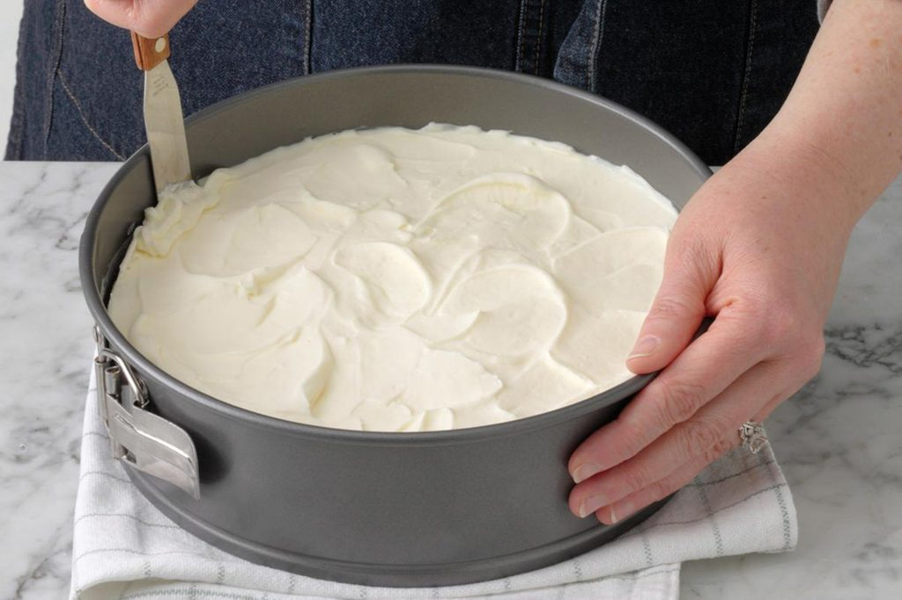
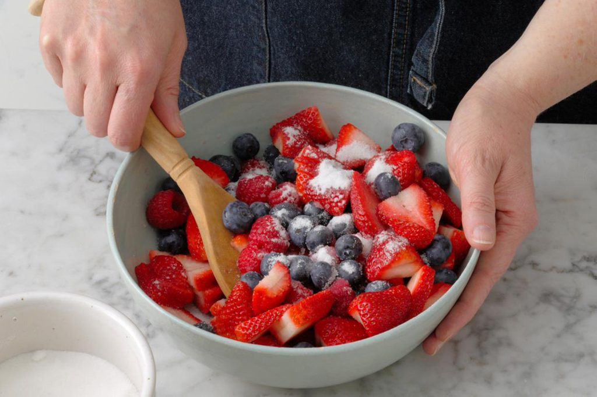

Mix together the biscuts,brown sugar in a small bowl. Gently stir in the melted butter and mix until combined then press the mixture into the pan

Step Two
For the filling, beat together the cream cheese, sugar and in a large bowl until smooth. Gradually add the cream, then continue beating until stiff peaks form.

Step Three
Transfer the mixture to the prepared crust, then refrigerate the cheesecake, covered, for 8 hours or overnight.

Step Four
About half an hour before you plan to serve the cheesecake, remove it from the fridge. Then, gently toss the berries with sugar and let stand for 15-30 minutes. You want to give the berry juices a little bit of time to release.

Step
To serve, start by removing the cheesecake from the pan. Use a knife to loosen the sides of the cheesecake from the springform, then release the latch and remove the rim. Slice into pieces and serve cheesecake with topping.